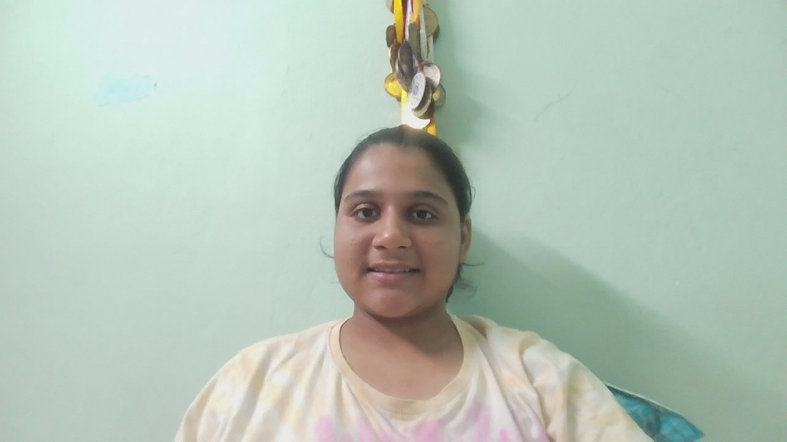

TAMANNA KUMARI

Summary
Highly motivated first-year B.Tech student in Chemical Engineering at BIT
Mesra with a strong academic foundation—96.2% in Class 10 and 82.4%
in Class 12. Possess proven leadership experience as a school counselor
and recognized for excellence in public speaking and persuasive
communication. Skilled in C++ (competitive programming), Web development,
content writing, and basic video editing. Actively involved in national-
level fests, including Mood Indigo, showcasing teamwork, creativity,
and initiative. Passionate about solving real-world problems through
technology, with growing interests in system design, web development,
and machine learning. Eager to contribute meaningfully to dynamic
tech teams and projects.
Work History
Student
- • Demonstrated leadership qualities while serving as a
school counselor for 9th and 10th grades.
- • Self-motivated, with a strong sense of personal
responsibility.
- • Achieved recognition for outstanding performance
in public speaking and persuasive discourse.
- • Proven ability to learn quickly and adapt to new
situation.
- • Member of Ehsaas and represented college in
Aagaz and won Moodindigo, 11T BOMBAY (Asia's
Largest Fest)
- • Gained experience in basic video editing
techniques.
- • Taught to kids of poor primary government schools
students under the Young Leader's Program.
Education
Bachelor Of Technology: Chemical Engineering
Bit Mesra- Mesra,Ranchi (2024-2028)
Pure Science
Vidya Bharati Chinmaya Vidyalaya- Jamshedpur,Jharkhand (2022-24)
Skills
- Competitive Programming
- Teaching Abilities(physics,chemistry,maths)
- Acting
-
Awards
- Mood Indigo First RUNNERUP:Aagaz(street play competition)
organizer: IIT BOMBAY
Others
Contact me